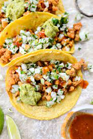

Easy Street Chicken Tacos

Description
This is an easily made recipe so long as you have "pollo para asar" or "chicken to grill." These delicious tacos are easy to make and topped with cilantro and onions. I serve them with guacamole, salsa and fresh lime wedges on the side.
Ingredients
- 1 pound of seasoned, boneless, skinless chicken
- 1 onion, diced
- 1/2 cup chopped cilantro
- 8 corn tortillas
Steps
- Preheat an outdoor grill for medium-high heat and lightly oil the grate.
- Grill chicken, turning occasionally, until juices run clear and chicken is no longer pink at the center, about 7 minutes. An instant-read thermometer, inserted near the center, should read at least 165 degrees F (74 degrees C).
- Heat corn tortillas until soft and pliable in the microwave, about 1 minute. Top with chicken, onions, and cilantro.